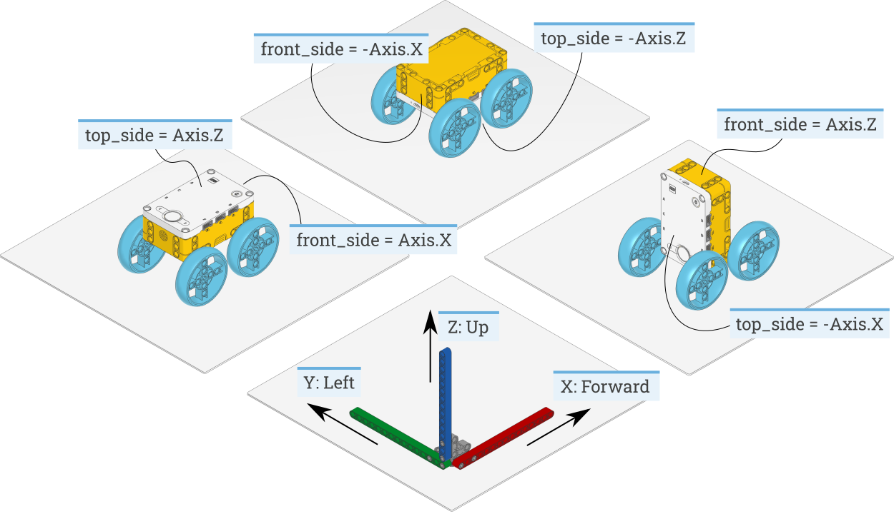

信号と単位
多くのコマンドでは、よく知られた物理量で引数を指定できます。 このページでは、それぞれの量とその単位の概要を説明します。
数値
- Number = int | float
数値は整数または浮動小数点値で表されます:
引数の型として
Numberと書かれている場合は、intとfloatのどちらも使用できます。たとえば、
wait(15)とwait(15.75)はどちらも有効です。 ただし、ほとんどの関数では入力した値は整数に切り捨てられます。 この例では、どちらのコマンドでもプログラムは15ミリ秒だけ 一時停止します。Note
BOOST Move ハブはシステムリソースの制約により浮動小数点数を サポートしていません。そのハブでは整数のみ使用できます。
時間
時間: ms
すべての時間と継続時間の値はミリ秒 (ms) で測定されます。
たとえば、 run_time による動作の継続時間や
wait の継続時間は
ミリ秒で指定します。
角度と角運動
角度: deg
すべての角度は度 (deg) で測定されます。1回転は360度に相当します。
たとえば、 Motor の角度値や GyroSensor の角度値は
度で表されます。
回転速度: deg/s
回転速度（角速度）は、物体がどれだけ速く回転するかを表し、 1秒あたりの度数 (deg/s) で表されます。
たとえば、 Motor や GyroSensor の回転速度値は
度/秒で表されます。
プログラムでは度/秒で作業することをおすすめしますが、 以下の表を使ってよく使われる単位間で変換できます。
deg/s |
rpm |
|
1 deg/s = |
1 |
1/6=0.167 |
1 rpm = |
6 |
1 |
回転加速度: deg/s²
回転加速度（角加速度）は、回転速度がどれだけ速く変化するかを表します。 これは1秒間の、度数/秒の変化量 (deg/s²) で表されます。
たとえば、 Motor の回転加速度設定を調整して、一定速度の設定値に
達するまでの滑らかさや速さを変えられます。
距離と直線運動
距離: mm
距離は可能な限りミリメートル (mm) で表されます。
たとえば、 UltrasonicSensor の距離値は
ミリメートルで測定されます。
プログラムではミリメートルで作業することをおすすめしますが、 以下の表を使ってよく使われる単位間で変換できます。
mm |
cm |
inch |
|
1 mm = |
1 |
0.1 |
0.0394 |
1 cm = |
10 |
1 |
0.394 |
1 inch = |
25.4 |
2.54 |
1 |
寸法: mm
寸法は距離と同様にミリメートル (mm) で表されます。
たとえば、タイヤの直径はミリメートルで測定されます。
速度: mm/s
直線速度はミリメートル/秒 (mm/s) で表されます。
たとえば、ロボット車両の速度は mm/s で表されます。
直線加速度: mm/s²
直線加速度は、速度がどれだけ速く変化するかを表します。これは1秒間の、 ミリメートル/秒の変化量 (mm/s²) で表されます。
たとえば、 DriveBase の加速度設定を
調整して、一定速度の設定値に達するまでの滑らかさや速さを
変えられます。
近似値と相対的な単位
割合: %
一部の信号には固有の単位がありません。最小値 (0%) から最大値 (100%) までの範囲を持ちます。割合の具体例としては、 相対距離 や 輝度 があります。
別の例として音量があり、0% （無音）から100% （最大）までの範囲です。
相対距離: %
一部の距離測定では、固有の単位による正確な値が得られませんが、 とても近い (0%) からとても遠い (100%) までの範囲を持ちます。 これらは相対距離と呼ばれます。
たとえば、 InfraredSensor の距離値は
相対距離です。
輝度: %
ライトの知覚される明るさはパーセントで表されます。ライトが消えている ときは 0% 、完全に点灯しているときは 100% です。50% を選ぶと、 人間の目にはおおよそ半分の明るさに知覚されます。
力とトルク
力: N
力の値はニュートン (N) で表されます。
プログラムではニュートンで作業することをおすすめしますが、 以下の表を使って他の単位との間で変換できます。
mN |
N |
lbf |
|
1 mN = |
1 |
0.001 |
2.248·10⁻⁴ |
1 N = |
1000 |
1 |
0.2248 |
1 lbf = |
4448 |
4.448 |
1 |
トルク: mNm
トルクの値は、特に記載がない限りミリニュートンメートル (mNm) で 表されます。
電気
電圧: mV
電圧はミリボルト (mV) で表されます。
たとえば、バッテリーの電圧を確認できます。
電流: mA
電流はミリアンペア (mA) で表されます。
たとえば、バッテリーが供給している電流を確認できます。
エネルギー: J
蓄えられたエネルギーや消費エネルギーはジュール (J) で表されます。
電力: mW
電力はエネルギーが蓄えられる、または消費される割合です。 ミリワット (mW) で表されます。
周囲環境
周波数: Hz
音の周波数はヘルツ (Hz) で表されます。
たとえば、ビープ音の周波数を選んで音の高さを変えられます。
温度: °C
温度は摂氏 (°C) で測定されます。華氏 (°F) やケルビン (K) への 変換には、以下の変換式を使えます:
°F = °C · 9/5 + 32.
K = °C + 273.15.
色相: deg
色の色相 (0〜359度)。
参照フレーム
Pybricksモジュールとこのドキュメントでは、以下の規約を使用します:
X: 正は前方向、負は後方向を意味します。
Y: 正は左方向、負は右方向を意味します。
Z: 正は上方向、負は下方向を意味します。
すべてのハブの測定値（加速度など）が正しい値と符号を持つように、 作品の中でハブがどのように取り付けられているかを指定できます。 これにより、ハブがどう動いているかではなく、ロボットが どう動いているかを簡単に確認できるように測定値が調整されます。
たとえば、デザインの中でハブが上下逆さまに取り付けられている 場合があります。 Figure 6 に示すように設定を 構成すると、ハブの測定値はそれに応じて調整されます。こうすることで、 ハブが後ろ向きに加速していても、X方向の正の加速度値はロボットが 前向きに加速していることを意味します。

Figure 6 3つの異なるロボットデザインで top_side と front_side
設定を構成する方法。ハブの上面と前面の
Side がどちらを向いているかを
確認すれば、他のハブや他の作品にも同じ手法を適用できます。
左の例はデフォルト設定です。